|
| 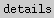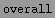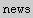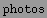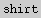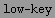 |
| 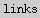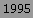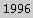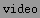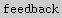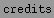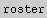 |
| 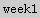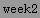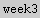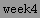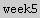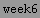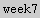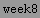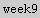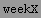 |
|
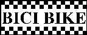
The 1997 Low-Key Hillclimbs are proud to be
sponsored by
BICI BIKE and
Voler Apparel
Left photo by Gordon Good
Right photo by Gary Rather Photography
Everything else copyright 1997 by Low-Keytm Events